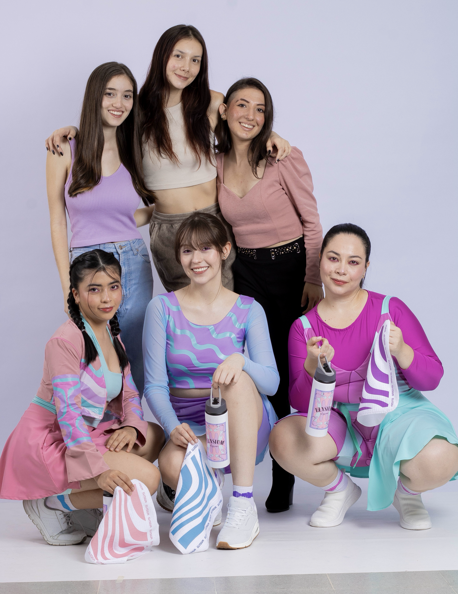
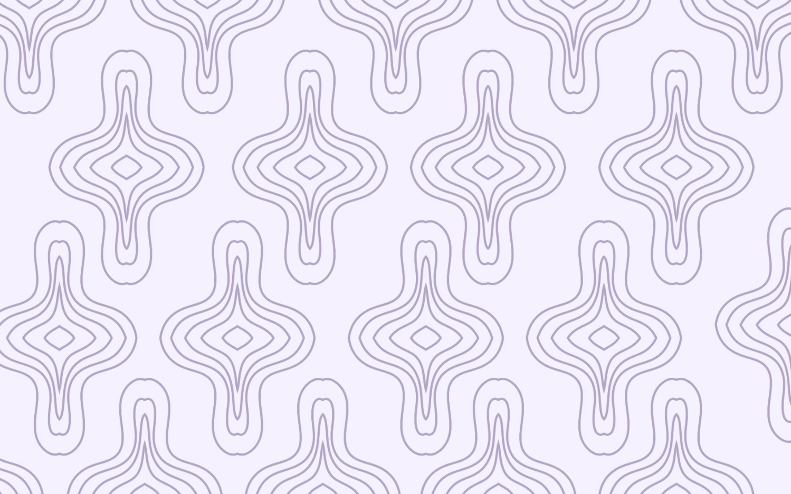
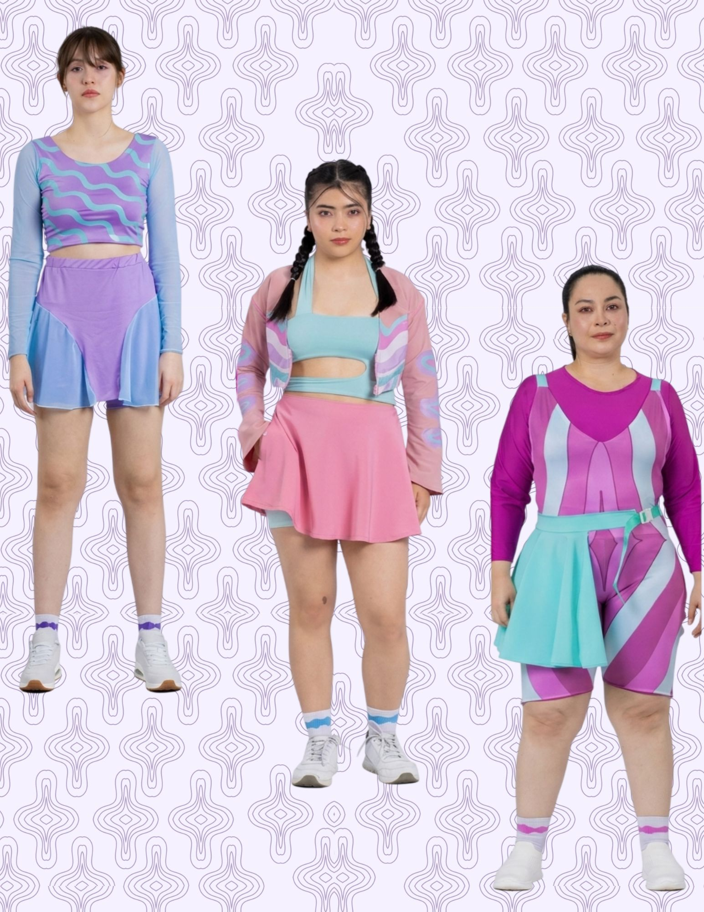
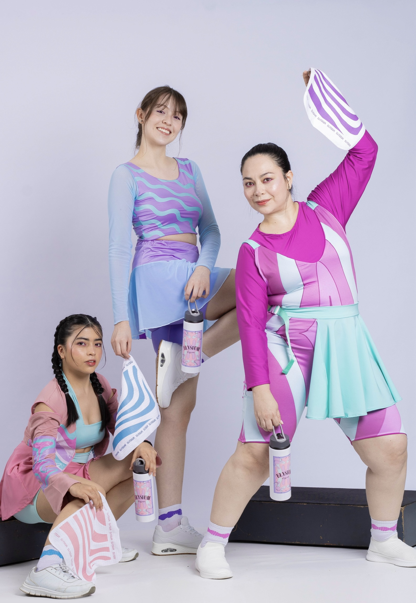
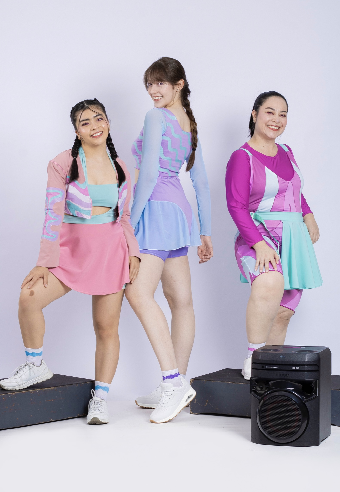
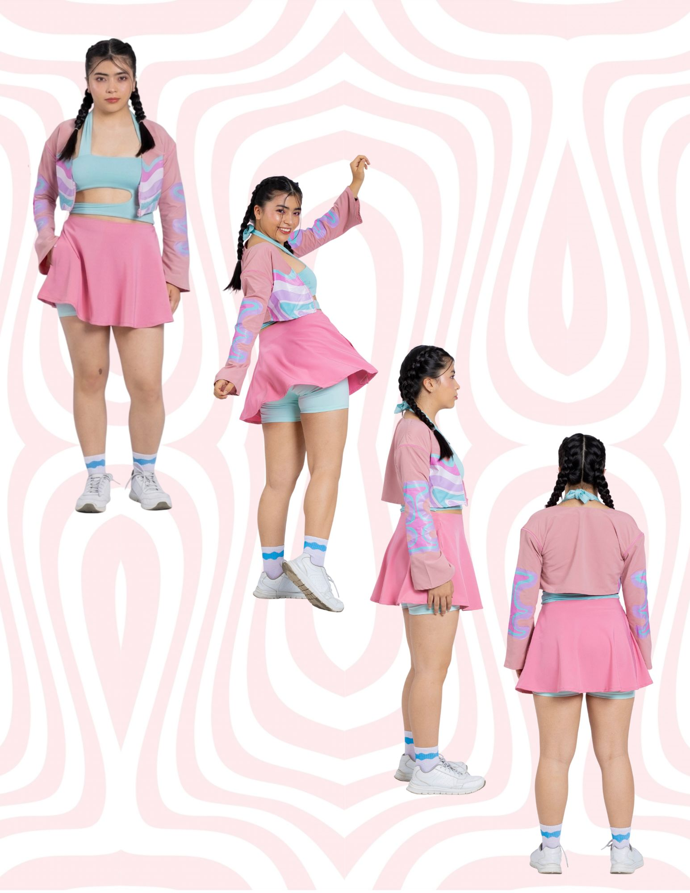
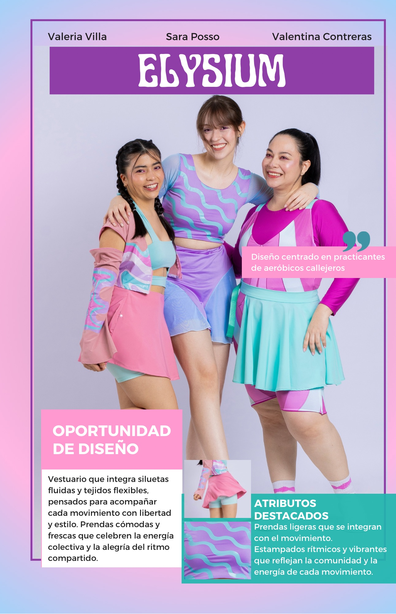

La energía del trabajo en equipo
Prendas que celebran la colectividad por Sara Posso, Valeria Villa y Andrea Contreras.
Sesión de fotos
2024

Identidad y sociedad • Cápsula "Elysium"
Taller de proyecto 3 - Diseño centrado en practicantes de aeróbicos callejeros en la ciudad de Medellin, desde el desarrollo de preguntas claves hasta la materialización de prendas que permitan la fluidez y la comodidad durante la practica de esta actividad.

Elysium evoca un estado de felicidad perfecta y paz eterna en la mitología griega, un lugar reservado para los virtuosos, en el contexto de los aeróbicos callejeros la música vibrante y los movimientos coordinados transforman el ejercicio en un ritual de liberación, convirtiéndose en un símbolo de bienestar integral y colectivo.
Se analizaron los aeróbicos desde el contexto de las personas que practican esta actividad en el parque Banderas en el estadio Atanasio Girardot, quienes ven este espacio para mejorar su bienestar físico y mental, liberar estrés y compartir con la comunidad mientras realizan actividades al aire libre la cual involucra ejercicios de alto impacto como saltos, trotes y pasos de baile.
Metodología
Sensibilización, conexión y análisis, desde la investigación directa.
Luego de la designación del tema al azar, comenzamos a investigar los vestuarios y las necesidades de los practicantes, todo desde la duda y el análisis, para así formular preguntas fáciles de entender y con respuestas que nos dieran información veraz para el desarrollo del proyecto, y así poder entender sus requerimientos, los factores ambientales y las oportunidades de diseño.
Se analizan las prendas mas utilizadas, se analizan los problemas ergonómicos en estas prendas, los valores de los practicantes, sus rutinas diarias, todo esto nos permite tener claro quien es nuestro usuario, todo de acuerdo con las respuestas a las entrevistas, teniendo en cuenta la funcionalidad, la parte del cuerpo que ocupa, teniendo en cuenta los mecanismos de insumos, mecanismos del patronaje y mecanismos textil.
Teniendo en cuenta el espacio y el clima, se realizaron propuestas de vestuario femenino y masculino en 15 minutos, analizando atributos tétricos y funcionales. Se generaron 10 moodboards que interpretaron siluetas, patronaje, paletas de color y otros elementos, lo que llevó a la creación de 25 roperos. De estos, se preseleccionaron 9 para presentar propuestas de estampados y selección de tela.
Se realizaron los patrones, se presentaron los prototipos y fueron aprobados, se hicieron ajustes a medida para las modelos, se llevaron a cabo los dtf y la sublimación para las prendas requeridas antes de ser confeccionadas, se presentó la propuesta del estilismo y fue aprobada, se llevó a cabo la sesión de fotos con los accesorios materializados y la utilería previamente seleccionada.
Roperos - Ilustraciones

Prendas que celebran la colectividad por Sara Posso, Valeria Villa y Andrea Contreras.

Practicantes de aeróbicos.

Prendas que se integran con el movimiento.

Colores que representan la libertad.
